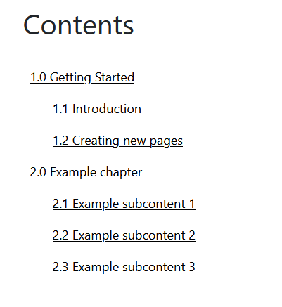

Introduction
This is a fully functional, responsive and printable documentation. Try pressing CTRL + P to see how to page
changes when you try to print it.
It's open source and anyone can use it for free.
Let's get started by the first thing that you want to do: creating new pages. Which is very simple
Creating new pages
Understanding the folder structure
For this will be showing on Visual Studio Code, but you can use any editor you want.
Let's first take a look at the folder structure of the project
At the root directory, we have the index.html, which is the home page of the website. Also, we have
a contents.html page, that is basically a page that contains the table of contents (DON'T DELETE
IT).
The folder hierarchy looks like this:
├───articles ├───js ├───media │ ├───images │ └───videos └───styles
The articles folder is where all the articles are located. This page where you are right now is in
articles/getting-started.html
That index.html is just a 404 error page.
Moving foward, we have the js folder. There, we have some scripts, such as the contents.js and the documentation-name.js These two files can't be deleted, because if you do, the pages won't work properly. We are going to take a look at what these scripts do in the future.
Now we have the media folder. It's self explanatory. It's where all the images and videos you want to use will be located
The styles folder contains the main CSS file that is used in all the pages. Feel free to modify and change colors of the background, font sizes, font faces etc;
To create a new page, you have to copy and paste the getting-started.html,
delete the things that are inside of a div that belongs to the page-content class:
<div class="page-content">
...(delete all things between this div)...
</div>
Now, you can write whatever you want insine de page-content div
Adding the new page to the contents page
Basically, the contents page works because of the content.js file on the js folder. Looking inside of the script we can see how it works
var contents = [
// chapter 1
// if you want to create another chaper, create another array after the comma
[
"Getting Started",
"Introduction",
"Creating new pages",
],
];
var contentsLinks = [
[
"articles/getting-started.html",
"articles/getting-started.html#introduction",
"articles/getting-started.html#creating-pages",
],
];
for (let i = 0; i < contents.length; i++) {
for (let content = 0; content < contents[i].length; content++) {
if (content == 0 && contentsLinks[i][content]) {
document.getElementById("contentsarray").innerHTML +=
`<li><a href='${contentsLinks[i][content]}'> ${(i + 1)}.${content} ${(contents[i][content])}</a></li>`;
} else if (content != 0 && contentsLinks[i][content]) {
document.getElementById("contentsarray").innerHTML +=
`<ul><li><a href='${contentsLinks[i][content]}'> ${(i + 1)}.${content} ${contents[i][content]}</a></li></ul>`;
}
}
}
The contents variable is an array that contains arrays inside of it. But what does this mean?
If you take a look at the contents page, you will see that the "Getting Started" appears as chapter and the "Introduction" and "Creating new pages" appears as subcontents of the chapter 1.
What we can understand by this is that the arrays inside the contents array represents chapters, and the items inside of it will be the the contents of the chapter. But notice that the first item of the array will be always over the others.
Let's create a new chapter by adding a new array to the contents array
var contents = [
[
"Getting Started",
"Introduction",
"Creating new pages",
],
[
"Example chapter"
]
];
It should be ready to go, right? No.
If you look at the contents page, you will see that the new chapter is not there yet.
Because now is time to take a look at the variable below.
var contentsLinks = [
[
"articles/getting-started.html",
"articles/getting-started.html#introduction",
"articles/getting-started.html#creating-pages",
],
];
This variable works as the same way the contents, so, you can add new chapters and contents, but this variable is to declare the links for each content declared on the contents array. And you need to put the links in order. If you create a new chapter, you have to create here as well.
Let's go ahead and create it.
var contentsLinks = [
[
"articles/getting-started.html",
"articles/getting-started.html#introduction",
"articles/getting-started.html#creating-pages",
],
[
"articles/example-page.html"
]
];
And that's all you need to do! The page will appear at the contents page.
If you want, you can create the subcontents by adding then inside the array
var contents = [
[
"Getting Started",
"Introduction",
"Creating new pages",
],
[
"Example chapter",
"Example subcontent 1",
"Example subcontent 2",
"Example subcontent 3",
]
];
var contentsLinks = [
[
"articles/getting-started.html",
"articles/getting-started.html#introduction",
"articles/getting-started.html#creating-pages",
],
[
"articles/example-page.html",
"#",
"#",
"#",
]
];
Here, I didn't specified a link, so I just put a #
Result
